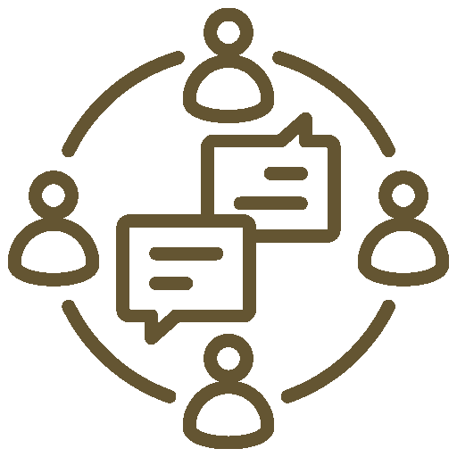
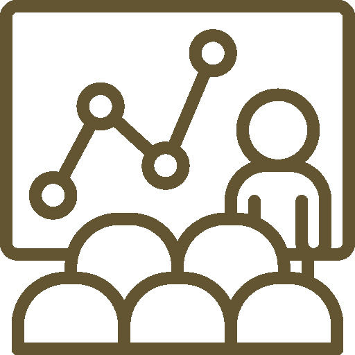

MAJOR EVENTS
KO:NNECT
Mentoring program that matches pre-major underclassmen with upperclassmen in the desired major.
General Meeting
Introduction to our student organization at the beginning of the school year.
Corporate Seminar
Invite a panel of UW alumni and professionals to provide career guidance as well as practical advice and counseling.
Networking Night
Collaborative networking event to allow students to connect with peer colleagues within the same major.